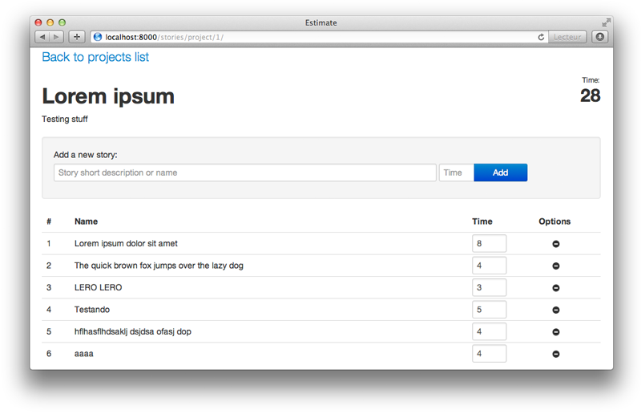

An application to help time estimation for digital agencies
Project estimation is a big concern for every digital agency in the business of selling custom software, after many years struggling with it we've finally decide to do something about it.
This open-source project was started with the intent of creating this missing tool that might help us during the annoying and rather boring process of listing micro tasks and assigning them some time.
While this is a product under development, we strongly encourage people to get it and try by themselves and hopefully help us on making it better
What it really does
The core idea of this tool comes from our own team experience with time estimations.
It is mostly based on the premise of splitting every single feature of a product into smalls tasks and assigning them time. Because smaller tasks tend to have more accurate times estimated, you'll get a much better estimating using the time from all these micro tasks.
Any ideas on how to improve the core concepts are most welcomed. If you have any new idea, just post it to our issue tracker and we'll take a look on it.
How to use it
As of version 0.4 we already have projects, tasks listing and user management. These sections provide all the functionality we need for the basic version of this tool.
To create new projects you just navigate to the index page of the application and under the "Add new project" area you may add a project description, name and click on "Add".
To access the new created project you just need to click on its name on the refreshed list and you'll get to the project task listing.
There you can add/remove tasks and their times. At the end you can check the total time on the right top corner.
About the project
Built on top of the Django framework, this is an open-source project inspired by other great tools like Redmine.
Stable releases will be found on our git repository on GitHub. Feedback and improvements on the software are greatly appreciated!
If you're using Estimate and find any bug, please post it on our issue tracker.
Released under the MIT License.